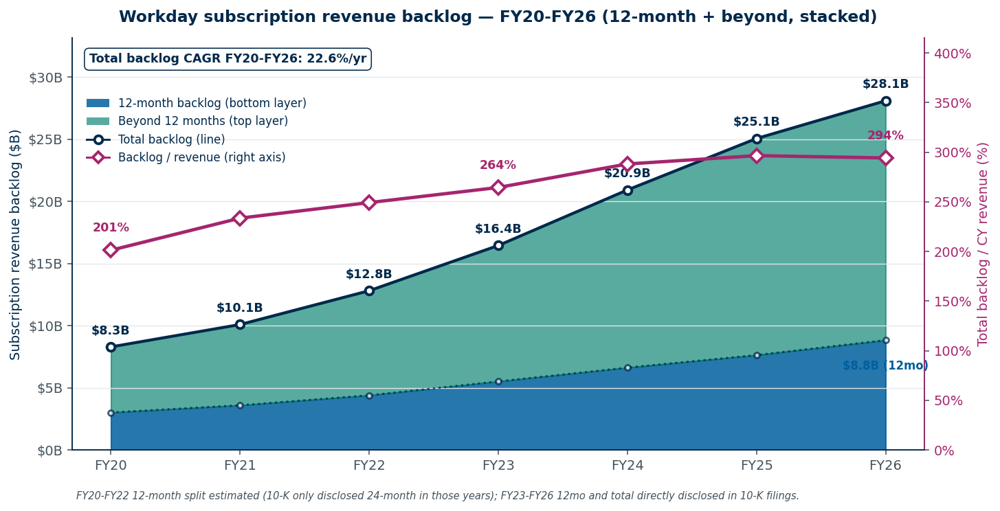

Workday's subscription revenue backlog over six years of history and four years of projection — the most diagnostic disclosed number for evaluating durability.
The backlog (formally: "remaining performance obligations for subscription contracts") is the dollar value of contracted future subscription revenue that has not yet been recognized. It includes both billed and unbilled amounts and represents legally enforceable customer commitments. Three things make it the most diagnostic disclosed metric for a SaaS company:
For Workday specifically, the backlog answers the central bear-case question: "Are F500 customers actually leaving?" If they were, the backlog would compress before churn shows up in revenue or retention metrics. It hasn't — the backlog has grown for seven straight years.

Figure 1. Backlog by recognition window across 11 years — FY20-FY26 actuals (pulled from individual 10-K filings) plus FY27-FY30 forecast under the AI-works scenario (hatched bars). The dashed grey line shows the alternative AI-doesn't trajectory (total backlog only). The navy diamond line on the right axis is backlog / revenue ratio — rising from 2.01× to 2.94× over six years as customers signed longer-duration contracts. Forecast shows the ratio stabilizing around 3.0× in the AI works case. FY20-FY22 12-month splits are estimated (10-K only disclosed 24-month in those years); FY23+ all three windows directly disclosed.All numbers below were pulled from individual SEC EDGAR 10-K filings. Sources cited at the bottom of this page.
| Fiscal year end | Total backlog ($B) | 24-month backlog ($B) | 12-month backlog ($B) | YoY total | Backlog / revenue |
|---|---|---|---|---|---|
| Jan 31, 2020 (FY20) | $8.29 | $5.48 | not disclosed | — | 2.01× |
| Jan 31, 2021 (FY21) | $10.09 | $6.53 | not disclosed | +21.7% | 2.34× |
| Jan 31, 2022 (FY22) | $12.81 | $7.98 | not disclosed | +26.9% | 2.49× |
| Jan 31, 2023 (FY23) | $16.45 | $9.68 | $5.51 | +28.4% | 2.65× |
| Jan 31, 2024 (FY24) | $20.92 | $11.66 | $6.62 | +27.2% | 2.88× |
| Jan 31, 2025 (FY25) | $25.06 | $13.60 | $7.63 | +19.8% | 2.96× |
| Jan 31, 2026 (FY26) | $28.10 | est. ~$15.5 | $8.83 | +12.1% | 2.94× |
Total backlog CAGR FY20 → FY26: 22.6%/yr. Backlog compounded 3.4× in six years against revenue that grew ~2.6× (from $4.1B FY20 to $9.55B FY26). The backlog-to-revenue ratio rose from 2.0× to 2.94× — customers are signing longer-duration contracts, which is the structural lock-in of an enterprise system of record.
12-month backlog CAGR FY23 → FY26: 16.9%/yr. Outpaces subscription revenue growth (13-14% over the same window), meaning bookings are growing faster than revenue recognition. That gap is the leading indicator that revenue growth will not deteriorate further before FY28.
The FY26 deceleration to +12.1% is the only soft datapoint. Total backlog growth slowed materially from the +20-28% range of prior years. Three possible reads: 1. Contract durations stopped lengthening — customers stopped signing longer deals, which would be benign if 12-month backlog held up. The 12-month figure grew +15.7% in FY26 ($7.63B → $8.83B), so this read is partially supported. 2. New bookings are decelerating — the bear's preferred reading. 3. Tougher comp vs the FY21-FY24 period when WDAY was signing many multi-year COVID-era expansion deals. Lapping that base.
The honest read: some combination of all three. The FY27 print (Q1 May 21, 2026 and the full year) will resolve which dominates.
Workday's backlog disclosure evolved over the 6-year window. Important for any historical comparison:
This means the 12-month series is only consistently available from FY23 onward; the total backlog is the cleanest cross-period comparison going back to FY20.
The model projects forward backlog growth per scenario. Backlog projections use scenario-specific growth assumptions that map to the underlying revenue scenarios:
| FY26 base | FY27E | FY28E | FY29E | FY30E | |
|---|---|---|---|---|---|
| AI works — total backlog ($B) | $28.10 | $32.6 | $38.5 | $45.8 | $53.1 |
| AI works — 12-month ($B) | $8.83 | $10.20 | $11.93 | $14.05 | $16.20 |
| AI doesn't — total backlog ($B) | $28.10 | $27.0 | $24.6 | $22.1 | $20.2 |
| AI doesn't — 12-month ($B) | $8.83 | $8.45 | $7.61 | $6.85 | $6.30 |
| I'm wrong — total backlog ($B) | $28.10 | $26.7 | $24.0 | $21.4 | $19.5 |
| I'm wrong — 12-month ($B) | $8.83 | $8.40 | $7.20 | $6.30 | $5.65 |
AI works trajectory: total backlog continues compounding ~17%/yr — slower than FY20-FY24's 22% pace because base is bigger and contract-duration tailwind is mostly exhausted. Backlog-to-revenue ratio holds at ~3.0×.
AI doesn't trajectory: backlog actually shrinks. Revenue declines per scenario (-10%/yr core ARR) flow through to bookings. By FY30, total backlog is $20B — down from $28B today, but the company is generating $35/share of cash return over the same window. The "shrinking backlog" is consistent with the "running for cash" story; the backlog being there at all (still ~3 years of revenue) is the floor under the TSR.
I'm wrong trajectory: faster compression than AI doesn't because Workday loses some F500 customers entirely (no renewal). Backlog declines to $19.5B by FY30 — still nearly 3 years of FY30 revenue but at a much lower terminal price.
For the backlog story to be wrong:
None of those are visible in current disclosed data. The first datapoint to watch is the Q1 FY27 print on May 21, 2026.
The backlog chart on the Addendum page (Figure 11) shows the FY21-FY26 historical series plus the four-year forward projection per scenario. Annotated: total backlog grew 2.8× in 5 years (FY21 $10.1B → FY26 $28.1B), and the FY26/FY27 transition is the visual fork between the three scenarios.
All historical figures pulled directly from Workday 10-K filings on SEC EDGAR. Each year's accession number, filing date, and URL:
Backlog definition (consistent across all 10-Ks): "Our subscription revenue backlog, which is also referred to as remaining performance obligations for subscription contracts, represents contracted subscription services revenues that have not yet been recognized and includes billed and unbilled amounts."
Forward projection numbers derived from the model at WDAY_Model.xlsx. Disclosure: Author has spoken with investors who own this stock but has not discussed it with anyone invested in the past 6 months.